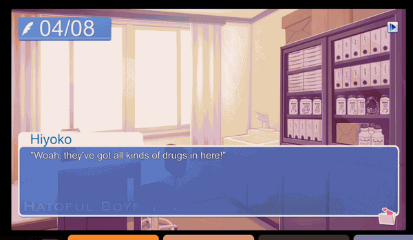
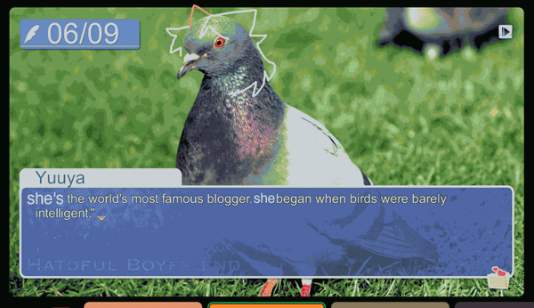

title
i'm dropping the upbeat blog accent. okay? this is serious. no more positivity on this blog. we're shadow the hedgehog now and serious and everything sucks. it's serious. i hauve covid and NOT in a horny way.
things i have learned from this experience so far:
- life is so hard for me
- joe biden should give me 1000000 dollars
- god has afflicted me personally
- nothing will ever taste good again
since the last blog all vestiges of hope have been sucked violently out of me with a silly straw. i eat dirt and worms every day. cough cough hack



just realized how much i love my friends. if you're reading this im giving you a big smooch on the cheek

the plastic death euphoria has still not worn off. everyone go listen to plastic death by glass beach right now. 1. amazinf music and 2. smacked me over the head with nearly all of cat comic's maimn themes. which is awesome. i NEED to buy it and hold it in my own two paws but it will be cheaper once i am at college. i must be so so so patient
other than that life sucks. procrastinating on things i should not be procrastinating on and feeling generally gross and unproductive and scared. can someone pay pal me $20

ok bye. look at this awesome image ardenna made for me